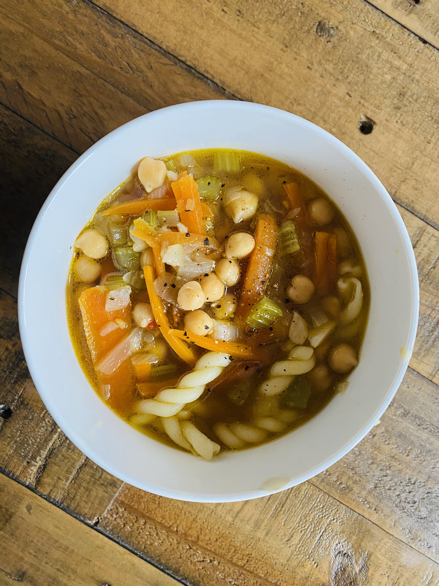

Noodle Soup

Description
There's nothing more comforting than noodle soup. This recipe is made by Taylerand20, and taken from allrecipes.com.
I always make myself noodle soup when I'm ill, but also tend to eat it on a regular basis! To make it exceptionally easy, you can use frozen mixed veggies and just toss them in some bouillon for 10 minutes or so before adding the noodles.
Ingredients
- 2 tablespoons olive oil
- 3 large carrots, diced
- 3 stalks celery, diced
- 1 large yellow onion, diced
- 5 cloves garlic, minced
- 12 cups vegetable broth
- 2 teaspoons herbes de Provence
- 3 dried bay leaves
- 1/2 teaspoon ground black pepper, or more to taste
- 1 (12 ounce) package wide vegan noodles
- 2 (15 ounce) cans chickpeas, drained and rinsed
- 1/2 cup chopped fresh parsley
- 1 tablespoon fresh lemon juice
Steps
- Warm olive oil in large, heavy pot over medium-high heat. Add carrots, celery, and onion and cook, stirring only occasionally, until lightly browned in spots and starting to get tender, about 10 minutes. Stir in garlic and cook 1 minute more.
- Add broth, herbes de Provence, bay leaves, and black pepper to the pot with the vegetables and bring to a boil. Simmer, uncovered, for 10 minutes.
- While broth simmers, bring a pot of well-salted water to a boil and cook noodles until tender but still firm to the bite, about 7 minutes or according to package directions. Drain and toss noodles with a small amount of oil to prevent sticking.
- Remove soup from heat and stir in chickpeas, parsley, and lemon juice. Ladle soup into bowls, adding noodles to each bowl right before serving.